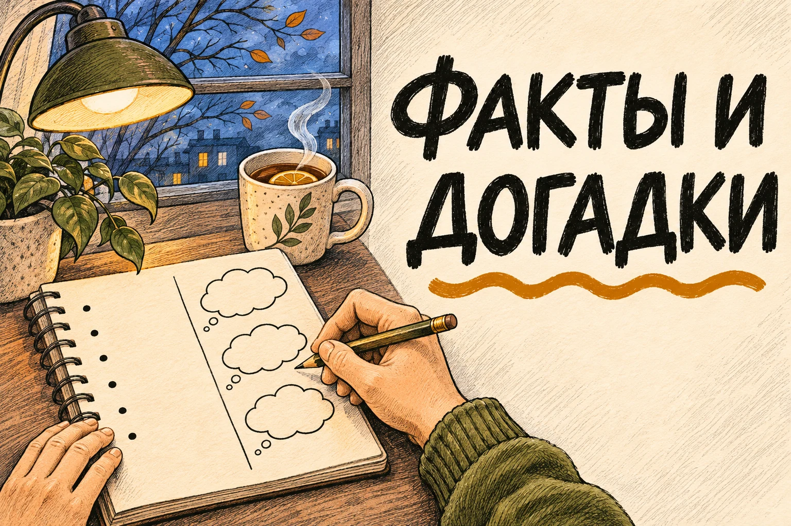
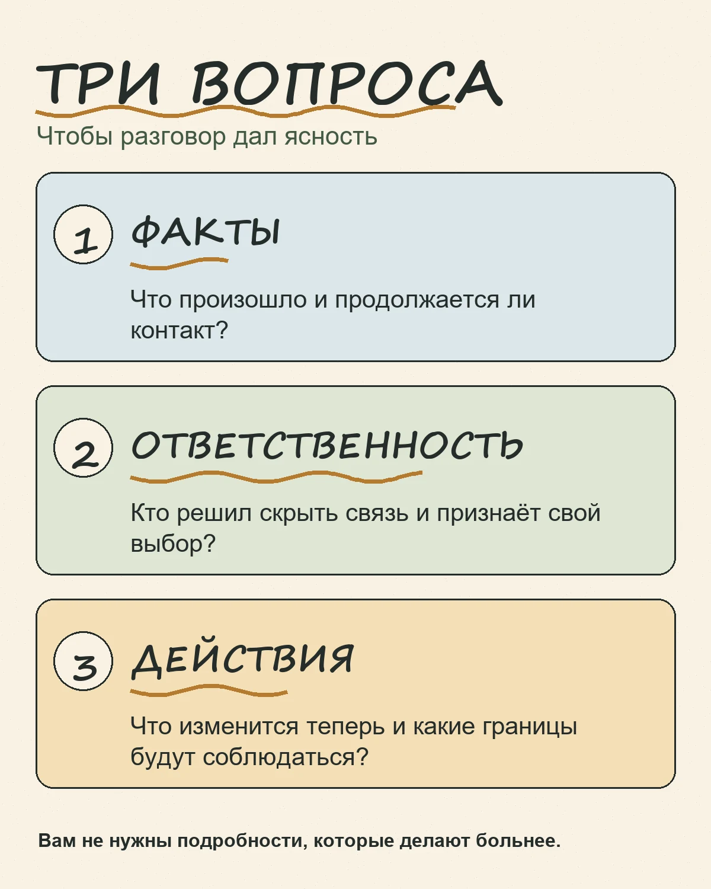
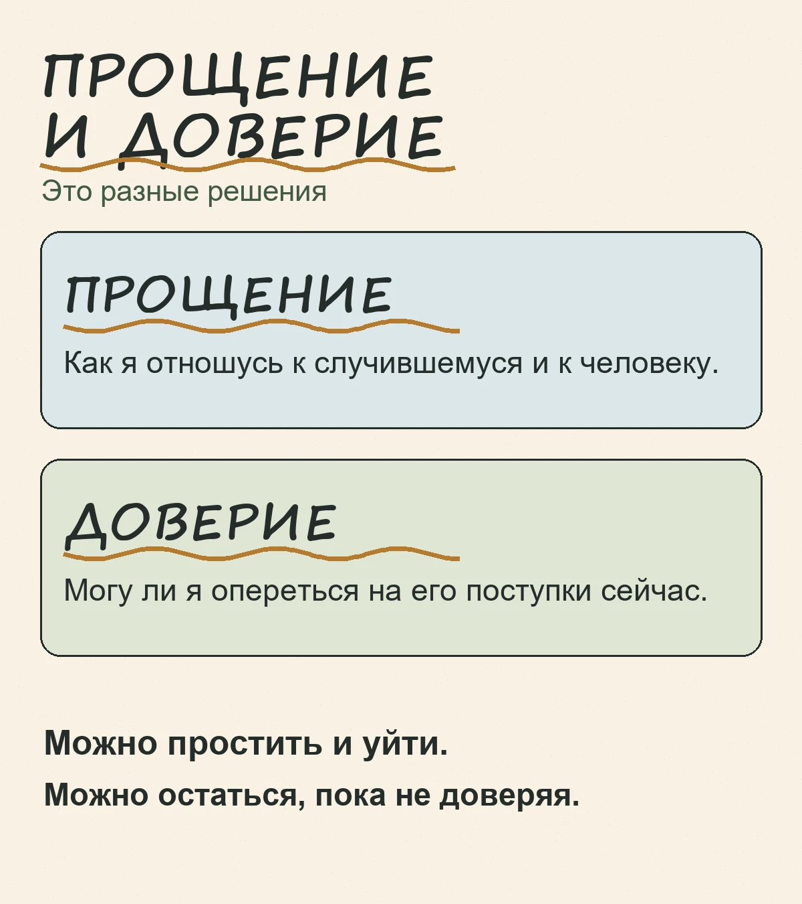

Главная → Блог → Почему люди изменяют
Почему люди изменяют, даже если любят: психология измены
28.11.2026 · 20 минут чтения
«Я тебя люблю. Это ничего не значило». После этих слов легче не становится. Если любовь есть, почему произошло то, что причиняет столько боли? А если её нет, зачем партнёр продолжает говорить обратное? Особенно трудно, когда до этого отношения казались счастливыми. В голове появляются вопросы: «Может, я недостаточно привлекателен? Партнёру чего-то не хватало во мне? Он всё время притворялся?» Но один ответ редко объясняет всю историю.
Измена — поступок того, кто изменил. Разбираться в обстоятельствах полезно, если вы хотите понять, что делать дальше. Объяснение не превращает обман в норму и не делает пострадавшего партнёра ответственным за чужое решение.
Короткий ответ: да, человек может любить партнёра и всё же изменить. Тёплые чувства, привязанность, соблюдение обещанной верности и ответственность за поступки — разные стороны отношений. Исследования описывают разные мотивы неверности: от обиды и одиночества до поиска новизны и самоутверждения. Ни один из них не позволяет по статье угадать причину поступка конкретного человека. Разобраться помогут честный разговор о том, что происходило, и наблюдение за тем, что партнёр делает теперь.
- Что считать изменой?
- Можно ли любить человека и при этом изменять ему?
- Почему люди изменяют: разные мотивы
- Почему изменяют даже в счастливом браке?
- Что происходит после обнаружения измены
- Первые шаги: без требования решить всё сегодня
- Можно ли восстановить доверие?
- Стоит ли сохранять отношения: пять вопросов себе
- Если изменили вы
- Когда лучше не пытаться «чинить отношения вдвоём»
- Частые вопросы
- Главное
Что считать изменой?
Для одних граница проходит на сексе, для других — на поцелуе, романтической переписке, тайной эмоциональной близости или приложении для знакомств. В разных парах правила различаются. Поэтому вопрос не только в действии, но и в том, о чём вы договорились и что скрывали друг от друга.
Например, флирт мог не обсуждаться прямо. Один человек воспринимал его как безобидную игру, другой — как нарушение близости. Здесь нужен разговор о границах. Другая ситуация — партнёр знал о договорённости, тайно встречался с кем-то и затем отрицал очевидное. Ссылаться на «разные взгляды» в таком случае недостаточно.
Согласованные немоногамные отношения сами по себе не являются изменой. Даже в них возможен обман, если человек нарушает установленные границы. Полезный вопрос звучит так: «Что именно было обещано, что произошло и что скрывалось?»
Если сексуальный контакт произошёл вследствие насилия или принуждения, это не добровольная измена. Человеку, пережившему насилие, нужна безопасность и поддержка, а не обвинение в неверности.
Можно ли любить человека и при этом изменять ему?
Да, такое противоречие возможно. Любовь — то, что человек чувствует к партнёру; привязанность — то, насколько важна ему связь. Верность проявляется в соблюдении договорённостей, а ответственность — в готовности учитывать последствия своего выбора. Эти вещи связаны, но одна не возникает автоматически из другой.
Представьте человека, который заботливо встречает партнёра после работы, скучает в разлуке и не хочет расставаться. При этом он тайно переписывается с кем-то ещё и объясняет себе: «Это просто сообщения». Его забота может быть настоящей. Тайна тоже настоящая. Вопрос «любит ли он?» не отменяет вопроса «почему он позволил себе обман и готов ли перестать?»
Это объяснение противоречия, а не способ проверить чужие чувства по четырём признакам. Некоторые люди говорят о любви, когда боятся потери семьи или привычной жизни. Проверить за них, что именно они чувствуют, невозможно. Зато можно увидеть, как они обходятся с обещаниями и вашей болью.
Почему люди изменяют: разные мотивы
В исследовании Дилана Селтермана и коллег 495 человек рассказывали о собственных изменах. Авторы выделили разные группы мотивов: среди них были недостаток любви или внимания, злость, сексуальное желание и разнообразие, стремление повысить самооценку, слабая приверженность отношениям и ситуативные факторы. Это ответы добровольцев, преимущественно молодых людей, о собственном поведении. Они показывают разнообразие объяснений, но не позволяют поставить «диагноз» конкретной паре и не доказывают, что названный мотив был единственной причиной (Selterman и соавт., Journal of Sex Research).
1. Не хватало внимания или близости
Некоторые люди говорят об одиночестве, накопившихся конфликтах или дистанции. Это реальные темы для разговора о паре. Однако между «мне не хватало близости» и «я завёл тайную связь» лежит решение. Неудовлетворённость можно обсуждать, предлагать перемены, обращаться за помощью, расставаться.
Если партнёр говорит: «Я изменил, потому что ты работала допоздна», он переносит ответственность на вас. Более честно звучало бы: «Мне не хватало времени вместе, но скрыть другую связь решил я».
2. Романтические чувства ослабли
Иногда человек уже не чувствует прежней влюблённости и вместо честного разговора начинает новую связь. Это не значит, что все прошлые чувства были ложью. Но фраза «я запутался» не объясняет, почему партнёр продолжал обещать верность, если был не готов её соблюдать.
3. Хотелось новизны
Новая связь может состоять почти целиком из ожидания встреч и приятных разговоров. Долгие отношения включают счета, усталость и бытовые задачи. Сравнивать эти две ситуации как равные — всё равно что сравнивать отпуск с обычным рабочим вторником. Новизна может казаться доказательством «настоящих» чувств, хотя условия для сравнения совершенно разные.
4. Искали сексуальное разнообразие
Желание другого сексуального опыта не обязательно означает отсутствие любви к партнёру. Однако желание не даёт согласия другого человека на нарушение моногамной договорённости. Если потребности или взгляды на формат отношений изменились, их можно обсуждать открыто, даже если разговор будет трудным.
5. Хотелось подтвердить свою привлекательность
Иногда человек ищет подтверждения: «Я ещё кому-то нравлюсь». Такое случается и в тёплых отношениях. Вымышленный пример: Анна считала свой брак устойчивым — они с мужем строили планы и растили ребёнка. После его связи с коллегой она искала изъян в себе. Муж говорил, что в новом внимании почувствовал себя привлекательным. Это объясняет его переживание, но не превращает Анну в причину его выбора.
6. Накопилась злость или хотелось отомстить
Человек может использовать связь на стороне как ответ на обиду или способ доказать себе власть: «Теперь ты поймёшь, каково мне». Такой мотив говорит о способе обращения с конфликтом, а не о вине того, кому изменили. Если после признания звучит угроза повторить это «в наказание», речь уже не о восстановлении доверия.
7. Не были готовы соблюдать обещанную верность
Можно говорить «люблю» и при этом не считать правило моногамии обязательным для себя. Такая позиция становится особенно ясной, если человек на словах обещает верность, а после обнаружения связи заявляет: «Не понимаю, почему тебя это задело». Важнее сопоставить признание в любви с тем, признаёт ли он право партнёра на свои границы.
8. Ситуация создала возможность
Алкоголь, поездка, внезапное сближение могут оказаться частью рассказа. Они объясняют контекст, но не снимают ответственности и не гарантируют, что это «никогда не повторится». Вопрос в том, какие решения человек принимал до, во время и после случившегося: остановился ли, скрывал ли, повторял ли, что меняет теперь.
Разные мотивы могут сочетаться. И ещё одна сложность: рассказ об измене может меняться, когда человек боится последствий. Поэтому полезнее оценивать не красивую историю о причинах, а её последовательность и нынешнее поведение.
Почему изменяют даже в счастливом браке?
Отношения могут быть важными и приятными для обоих, но это не делает каждого участника всегда последовательным. В исследовании мотивов неверности люди называли не только недостаток любви или внимания, но и поиск разнообразия, желание самоутвердиться, низкую готовность к обязательствам и ситуативные обстоятельства. Это не значит, что хорошее качество отношений не имеет значения. Оно значит, что объяснять любую измену недостатками партнёра неверно (Selterman и соавт.).
Как человек оправдывает обман перед самим собой
Человеку трудно одновременно считать себя надёжным партнёром и замечать, что он нарушает обещание. Один способ не сталкиваться с противоречием — уменьшать значение происходящего: «Это всего лишь переписка», «Я всё равно люблю семью», «Никто не узнает». Подобные фразы не доказывают, что человек «по природе» нечестен. Они показывают, как легко отложить разговор о собственной ответственности.
Бывает и постепенное смещение границы. Например, Елена — вымышленная героиня — стала чаще обсуждать семейные ссоры с приятелем. Затем ждала именно его сообщений, удалила часть переписки, чтобы партнёр её не увидел, и сказала себе, что раз секса нет, говорить не о чем. Здесь важна не дружба с другим человеком сама по себе. Точка, требующая честного разговора, — скрываемая близость, противоречащая договорённости пары. Это один возможный сценарий, а не универсальная «лестница измены».
А если дело в привязанности?
Некоторым людям трудно выдерживать близость, просить о поддержке или признавать, насколько они зависят от отношений. Другие постоянно ищут подтверждения, что они желанны. Метаанализ 17 исследований обнаружил связь между ненадёжной привязанностью и неверностью, но величина связи не позволяет предсказывать поступок отдельного человека. Тип привязанности не является оправданием измены и не ставится по одному эпизоду. Если хотите разобраться в понятии, прочитайте материал о типах привязанности (обзор исследований).
Почему человек изменяет, но не уходит?
Потому что возможны противоречивые желания: сохранить семью и привычную жизнь, не терять связь с детьми, избежать финансовых последствий расставания, удержать обоих людей рядом. Иногда партнёр действительно хочет остаться и признаёт, что причинил боль. Иногда хочет сохранить удобство, не меняя своего поведения. Сам факт, что он остался, не отвечает на вопрос о раскаянии. Смотрите, прекратился ли обман и может ли он спокойно говорить о произошедшем без обвинений в ваш адрес.
Что происходит после обнаружения измены
Даже если вы раньше уверенно говорили «я бы сразу ушёл», в реальности можно одновременно злиться, тосковать, хотеть подробностей и бояться их услышать. Это не слабость. Измена ставит под сомнение не только отношения, но и собственную память: «А когда мы тогда смеялись вместе, он уже переписывался с ней?»
В интервью с 25 женщинами, пережившими измену партнёра, важными темами были разговор, правда, доверие и чувство нарушенной справедливости. Это опыт участниц исследования, а не единственно правильный путь для всех (Walravens и Rober).
После обмана мозг словно проверяет собственные воспоминания: «В тот вечер он уже знал? А тогда почему улыбался?» Можно захотеть проверить телефон, пересмотреть годы переписки, сравнить себя с третьим лицом. У некоторых людей появляются бессонница, тревога, резкие колебания между желанием обнять партнёра и потребностью уйти. Исследование 73 молодых взрослых обнаружило связь пережитой неверности с посттравматическими симптомами и психологическим неблагополучием. Такая реакция возможна, но сама по себе не означает ПТСР, а небольшую молодую выборку нельзя переносить на всех (Roos и соавт.).
Сергей — ещё один вымышленный пример — раньше был уверен: «Если изменят, я сразу уйду». Когда обнаружилась связь жены на стороне, он одновременно злился и боялся потерять её. Противоречивые чувства не обязаны указывать ему ответ. Он может дать себе время понять, что ему нужно для безопасности и ясности.
Бесконечное расследование часто добавляет болезненных деталей, не отвечая на главный вопрос: что мне нужно, чтобы принять решение? Можно заранее разделить информацию на необходимую и такую, которая лишь усиливает мучительные образы.

Первые шаги: без требования решить всё сегодня
1. Отделите факт от догадок. Запишите три колонки: что вы точно знаете, что сказал партнёр, что пока предполагаете. Например, «видел переписку о встрече» — факт; «он никогда меня не любил» — вывод, который сейчас невозможно проверить. Такая запись не уменьшает серьёзность случившегося, зато помогает задать ясные вопросы.
2. Дайте себе право на паузу. Необязательно сразу объявлять окончательное расставание или прощение. Можно сказать: «Мне нужно несколько дней без обсуждения будущего. Потом мы поговорим о фактах». Если вы живёте вместе, решите бытовые вопросы: где спать, как общаться по поводу детей, когда возвращаться к разговору. Пауза не равна согласию всё забыть.
3. Поговорите с тем, кто выслушает без давления. Нужен человек, который не скажет за вас «терпи» или «уходи немедленно». Если переживание мешает спать, есть, работать или вы чувствуете, что не справляетесь, стоит обратиться к специалисту по психическому здоровью. При угрозах, принуждении или насилии приоритет — безопасность и живая помощь, а не совместный разговор о доверии.
4. Позаботьтесь о здоровье, если был сексуальный контакт на стороне. Обсудите с врачом, какие анализы на ИППП нужны и когда их сдавать. До оценки рисков можно использовать презерватив или воздержаться от секса. Если у вас был возможный контакт с ВИЧ за последние 72 часа, обратитесь за неотложной медицинской оценкой как можно раньше: врач определит, нужна ли постконтактная профилактика. Сам факт измены партнёра не означает, что она нужна всем (CDC: тестирование на ИППП, CDC: профилактика после возможного контакта с ВИЧ).
Три вопроса, с которыми можно идти в разговор
| Нужно понять | Как спросить | На что обратить внимание |
|---|---|---|
| Что произошло | «Что было, когда началось и продолжается ли контакт?» | Ответ конкретный и не меняется каждый раз? |
| Кто отвечает за выбор | «Как ты объясняешь своё решение скрыть это?» | Человек признаёт своё действие или обвиняет вас? |
| Что будет теперь | «Что ты готов делать, чтобы не повторять обман и уважать мои границы?» | Есть действия, а не только обещание «забудь»? |
Вы вправе не задавать вопросы о подробностях секса или сравнениях, если они не помогают вам принять решение. Полезно заранее сказать: «Мне нужна правда о длительности, контактах и рисках для здоровья. Описаний интимных деталей я не хочу».

Трудно собрать мысли перед разговором? В AI Therapist можно описать случившееся, отделить факты от предположений и сформулировать вопросы и границы. Это место для спокойной подготовки, когда решение о будущем отношений пока не принято.
Скачать AI Therapist в RuStoreМожно ли восстановить доверие?
Иногда — да. Но «вернуть как было» не получится одним признанием, доступом к телефону или обещанием больше так не делать. В систематическом обзоре 13 исследований восстановления доверия в парах повторялись темы открытости, ответственности и раскаяния, понятных объяснений случившегося, совместных действий и согласованных способов убедиться в надёжности партнёра. Авторы подчёркивают ограничения доказательной базы: это не универсальный протокол, а описание того, что встречалось в изученных парах (Giacobbi и Lalot, 2025).
Если оба хотят попробовать сохранить отношения, начальные условия обычно выглядят так:
- Если пара сохраняет моногамию, романтическая или сексуальная связь на стороне прекращена. Если избежать общения невозможно, например из-за общей работы, нужно открыто обсудить его границы. Пока тайная связь продолжается, устойчиво восстановить доверие крайне трудно.
- Партнёр признаёт свою ответственность. «Я решил скрыть это» отличается от «ты вынудила меня».
- Не приходится каждый раз узнавать новые факты. Очередное признание после случайно найденной детали снова разрушает опору. При этом пострадавший человек сам выбирает, какие подробности ему нужны.
- Есть согласованные действия. Например, сообщать о неизбежном рабочем контакте с третьим лицом, приходить на запланированные разговоры, соблюдать новые границы. Временная прозрачность по взаимной договорённости может помочь, но постоянная слежка не заменит добровольной надёжности.
- У пострадавшего остаётся право передумать. Можно попробовать восстановить отношения, а затем решить, что продолжать их не хочется.
Если изменивший партнёр требует «хватит вспоминать» через неделю, высмеивает вашу боль, снова лжёт или делает вас виновным в случившемся, доверие сейчас не восстанавливается. Смотрите на повторяющиеся действия, а не на силу извинения в один вечер.
Может ли измена повториться?
Никто не может гарантировать ответ для конкретного человека. В продольном исследовании 484 взрослых предыдущая неверность в одних отношениях была связана с большей вероятностью неверности в следующих. Это связь на уровне группы, а не приговор человеку, который однажды изменил, и не прогноз именно для вашей пары (Knopp и соавт., 2017).
Посмотрите, что происходит сейчас. Настораживают продолжающаяся ложь, обвинение вас, отказ обсуждать границы и требование немедленно «закрыть тему». Более обнадёживают признание выбора, готовность отвечать на важные вопросы и последовательное соблюдение договорённостей. Даже хорошие признаки не обещают, что измена не повторится. Они дают больше оснований оценивать отношения по реальным поступкам.
Прощение и доверие — разные процессы
Можно перестать желать человеку наказания и всё равно не хотеть быть с ним. Можно остаться, но пока не доверять. Нельзя назначить себе дату, к которой чувства «обязаны пройти». Если вам близка тема прощения, подробнее мы разбираем её в статье «Как простить обиду». А о том, как говорить о допустимом в отношениях, — в материале про личные границы.

Парная терапия может дать место для честного разговора, если оба участника согласны работать и общение безопасно. Она не обязана закончиться сохранением пары. Иногда результатом становится ясное и уважительное расставание.
Стоит ли сохранять отношения: пять вопросов себе
Если хочется получить готовый ответ, попробуйте сначала честно ответить себе на пять вопросов. Не как на тест с баллами, а как на заметки для разговора с собой или близким человеком.
- Чувствую ли я себя в безопасности рядом с партнёром — в разговоре и в повседневной жизни?
- Прекратился ли обман, или мне по-прежнему приходится добывать правду?
- Вижу ли я конкретные изменения спустя время, а не только обещания после признания?
- Я хочу сохранить эти отношения или больше боюсь потери привычной жизни?
- Могу ли я говорить о своей боли, не опасаясь обвинений и давления?
Ответы могут меняться. Сейчас достаточно заметить, на каком вопросе вы остановились и какая поддержка нужна, чтобы спокойно подумать дальше. Если рядом с партнёром небезопасно, сначала решайте вопрос безопасности, а не выбора формата отношений.
Если изменили вы
Вопрос «почему я это сделал?» нужен, но он не должен превращаться в поиск оправдания. Можно признавать неудовлетворённость отношениями, страх одиночества или импульсивность и одновременно признавать: скрывать связь решили вы.
Начните с прекращения обмана, правдивого ответа на важные вопросы и готовности выдержать чувства партнёра без требования немедленно вас простить. Не обещайте того, чего не можете выполнить. Если не готовы отказаться от другой связи или моногамии, честнее прямо сказать об этом, чем удерживать человека рядом обещанием, которому сами не верите. Работа над причинами нужна независимо от того, останетесь ли вы вместе.
Когда лучше не пытаться «чинить отношения вдвоём»
Если вместе с изменой появились угрозы, контроль денег или передвижений, принуждение к сексу, физическое насилие либо страх за свою безопасность, задача меняется. Важнее найти безопасное место и обратиться за живой помощью к близким, профильным службам или специалистам. Совместные переговоры не должны ставить вас под дополнительный риск.
Если вы чувствуете, что связь держится только на страхе потерять партнёра, а ваши границы снова и снова нарушаются, может помочь отдельный разговор о эмоциональной зависимости. Это не ярлык для человека, который после измены пока не может уйти. Решение требует времени, ресурсов и поддержки.
Частые вопросы
Почему изменяют в счастливых отношениях?
Потому что со стороны или даже изнутри отношения могут быть тёплыми, а решение об измене зависит не только от их качества. Поиск новизны, самоутверждение, низкая готовность соблюдать договорённость и другие мотивы тоже встречаются в самоотчётах. «Счастливые отношения» не служат страховкой от чужого выбора.
Если партнёр говорит, что любит, можно ли ему верить?
Слова о любви могут быть искренними. Но для решения о будущем важнее, признаёт ли человек обман, говорит ли правду и меняет ли поведение. Любовь не отменяет последствия поступка.
Нужно ли знать все подробности измены?
Нет общего правила. Информация о длительности, продолжающемся контакте, нарушенных договорённостях и рисках для здоровья может быть важна. Подробности, которые создают навязчивые образы и не помогают решению, вы вправе не запрашивать.
Сколько времени восстанавливается доверие?
Универсального срока нет. Ориентир — не календарь, а наблюдаемая последовательность: правдивые ответы, соблюдение границ, отсутствие нового обмана и возможность обсуждать сложное без давления. Если вам говорят «уже пора забыть», это не измерение вашего прогресса.
Можно ли простить измену и всё равно расстаться?
Да. Прощение не обязывает продолжать отношения. И наоборот: решение пока остаться не означает, что вы уже простили или снова доверяете.
Считается ли тайная переписка изменой?
Зависит от её содержания и договорённостей пары. Сам факт переписки или дружбы с другим человеком ещё ничего не доказывает. Если человек скрывает романтическую близость вопреки согласованным границам, это уже повод говорить о нарушении доверия.
Если изменил один раз, изменит ли снова?
Общего ответа нет. Прошлая неверность связана с повышенным риском повторения в исследованных группах, но не определяет будущее отдельного человека. Оценивайте признание ответственности, прекращение обмана и устойчивость действий во времени.
Почему партнёр изменяет, но не уходит?
Он может быть привязан к семье, бояться расставания или хотеть сохранить преимущества обеих связей. То, что человек остался, само по себе не доказывает ни любовь, ни готовность менять поведение.
Нормально ли продолжать любить человека после его измены?
Да. Чувства не исчезают по приказу. Любовь к партнёру и боль от его поступка могут существовать одновременно; ни одно чувство не обязывает вас оставаться или уходить.
Главное
Измена не доказывает, что с вами «что-то не так». Она также не всегда позволяет одним словом ответить, любил ли партнёр. Причины могут быть разными, но ответственность за нарушение договорённости остаётся у того, кто её нарушил. После первого шока полезнее искать не идеальное объяснение прошлого, а ясность о настоящем: правда ли названа, границы ли уважаются, есть ли действия, на которые можно опереться. Ваше решение — попробовать восстановить отношения, взять паузу или уйти — не должно приниматься под нажимом.
Научные источники
- Selterman и соавт., 2019 — самоотчёты о мотивах неверности; выборка преимущественно молодых людей.
- Ghiasi и соавт., 2024 — метаанализ исследований связи привязанности и супружеской неверности.
- Walravens и Rober, 2023 — интервью с 25 женщинами, пережившими измену партнёра.
- Roos и соавт., 2019 — исследование психологических симптомов у 73 молодых взрослых после неверности партнёра.
- Knopp и соавт., 2017 — продольное исследование неверности в двух последовательных отношениях.
- Giacobbi и Lalot, 2025 — систематический обзор исследований восстановления доверия в парах.
Материал подготовлен редакцией AI Therapist на основе указанных публикаций. Дата подготовки: 28 ноября 2026 года. Дату публикации и дату последнего содержательного обновления следует указывать на странице после выпуска; внешняя экспертная проверка этой версии не проводилась.
Как подготовлен материал. Текст подготовлен редакцией AI Therapist с опорой на перечисленные исследования. Примеры условные; статья носит просветительский характер и не позволяет определить мотивы конкретного человека без разговора с ним. О проекте.